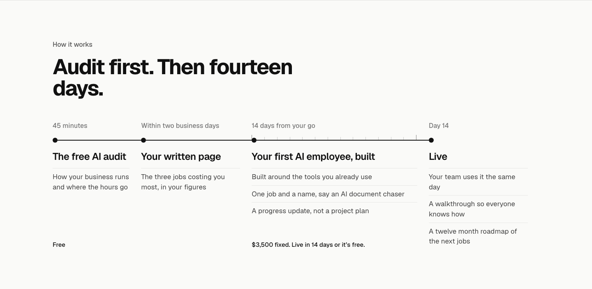
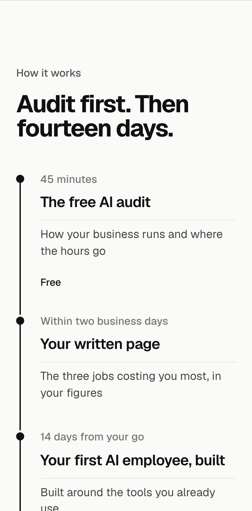
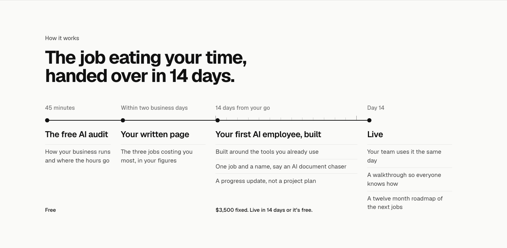
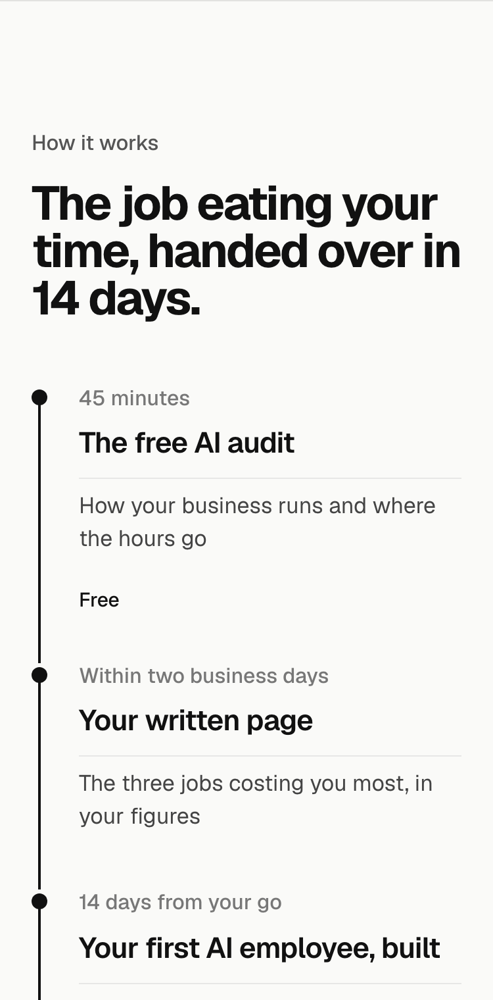
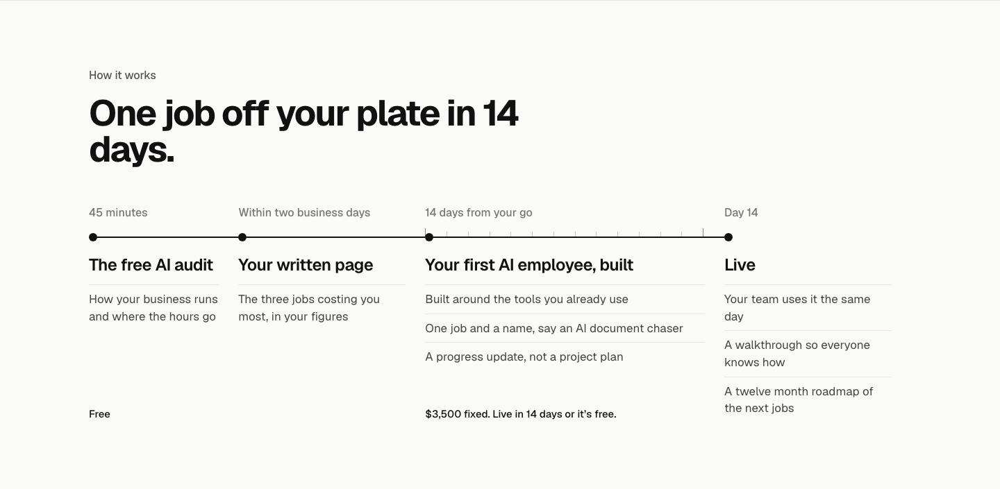
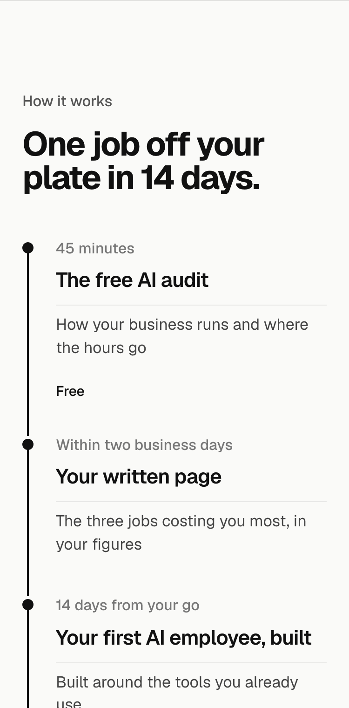
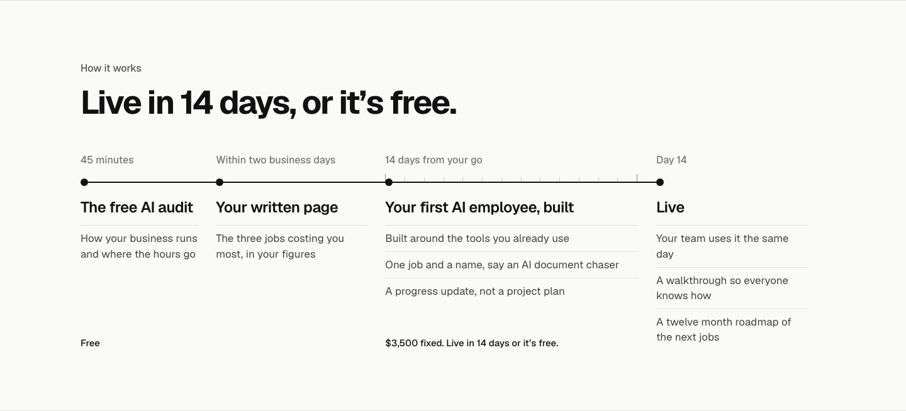
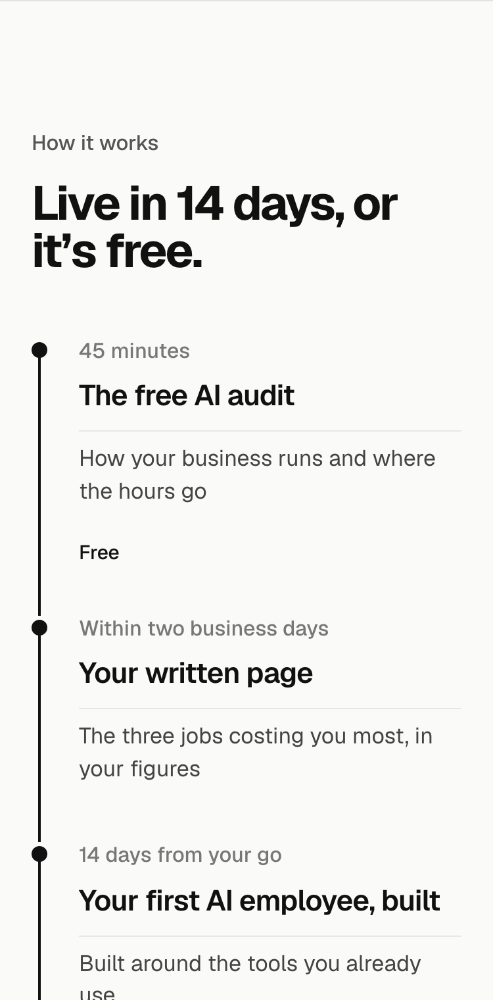

30 lines, numbered so you can point at parts. Scored out of 5, a point each, half for partly: Picture, Prove (checkable on the page), Only us, Device, Will’s shape (plain, the owner’s words, one beat, no slogan couplets, which score 0). The label above it stays How it works.
| # | Heading | Device | Picture | Prove | Only us | Device | Shape | Score /5 |
|---|---|---|---|---|---|---|---|---|
| 2 | One job off your plate in 14 days. | familiar phrase bent | 1 | 0.5 | 0.5 | 1 | 1 | 4 |
| 3 | The job eating your time, handed over in 14 days. | callback to the hero | 1 | 1 | 0.5 | 0.5 | 1 | 4 |
| 4 | Your worst job, handed over in 14 days. | plain statement | 1 | 1 | 0.5 | 0 | 1 | 3.5 |
| 5 | Live 14 days after you say go. | plain statement | 0.5 | 1 | 0.5 | 0.5 | 1 | 3.5 |
| 6 | Live in 14 days, or it’s free. | condition | 0 | 1 | 1 | 0.5 | 1 | 3.5 |
| 7 | From a 45 minute chat to a job that runs itself. | from, to | 1 | 1 | 0.5 | 0.5 | 0.5 | 3.5 |
| 1 | Audit first. Then fourteen days. | today, couplet | 0.5 | 1 | 0.5 | 1 | 0 | 3 |
| 8 | Your first AI employee in 14 days. | plain statement | 0.5 | 1 | 0.5 | 0 | 1 | 3 |
| 9 | 14 days from go to live. | from, to | 0.5 | 1 | 0.5 | 0.5 | 0.5 | 3 |
| 10 | From the audit to day 14. | from, to | 0.5 | 1 | 0.5 | 0.5 | 0.5 | 3 |
| 11 | Two weeks from yes to running. | from, to | 0.5 | 1 | 0.5 | 0.5 | 0.5 | 3 |
| 12 | Done in 14 days, or it’s free. | condition | 0 | 1 | 1 | 0.5 | 0.5 | 3 |
| 21 | The job you hate, sorted in 14 days. | owner’s words | 1 | 0.5 | 0.5 | 0.5 | 0.5 | 3 |
| 13 | How your first job gets handed over. | plain statement | 1 | 0.5 | 0 | 0 | 1 | 2.5 |
| 14 | What you get, and when. | pair | 0 | 1 | 0 | 0.5 | 1 | 2.5 |
| 15 | Live on day 14. | plain statement | 0.5 | 1 | 0.5 | 0 | 0.5 | 2.5 |
| 16 | Start small. Go live in 14 days. | couplet | 0 | 1 | 0.5 | 1 | 0 | 2.5 |
| 22 | Your first job runs itself by day 14. | plain statement | 0.5 | 0.5 | 0.5 | 0.5 | 0.5 | 2.5 |
| 23 | Book on Monday. Live a fortnight later. | couplet | 0.5 | 0.5 | 0.5 | 1 | 0 | 2.5 |
| 17 | What happens after you book. | plain statement | 0 | 1 | 0 | 0 | 1 | 2 |
| 18 | How a job leaves your desk. | picture | 1 | 0 | 0 | 0.5 | 0.5 | 2 |
| 19 | Four steps, 14 days. | couplet | 0 | 1 | 0 | 1 | 0 | 2 |
| 20 | One job, handed over for good. | plain statement | 1 | 0 | 0 | 0 | 0.5 | 1.5 |
| 24 | No heading: the label and the timeline | none | 0 | 1 | 0 | 0 | 0.5 | 1.5 |
Audit first. Then fourteen days.


The job eating your time, handed over in 14 days.


One job off your plate in 14 days.


Live in 14 days, or it’s free.

